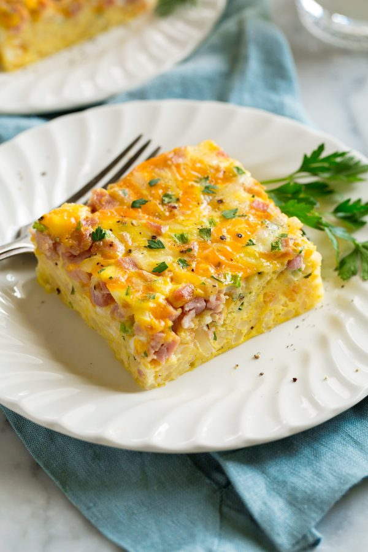

Casseroles

A perfect homestyle Breakfast Casserole recipe!
Filled with the works – including hash browns, eggs, ham,
two kinds of cheese and fresh herbs.
Then of course there’s some butter and half and half
included to make it a richer breakfast worthy of holidays,
celebrations and weekends!
Ingredients
- Refrigerated hash browns – these are sometimes found by the dairy
at grocery stores and at other places I’ve even
found them in the meat section.
Ask a clerk if you have trouble locating them.
- Butter – salted or unsalted butter works fine here.
This is used to saute the hash browns, which
adds more flavor and helps soften them a little
since they start out as crisp raw potatoes.
- Half and half – wondering what half and half even is?
It’s basically a blend of half milk and half cream
so if needed just use 3/4 cup milk 3/4 cup cream.
- Cheddar cheese – for bolder flavor go for sharp cheddar.
- Swiss cheese – you can also switch up the cheeses
listed with others you may have.
- Cooked ham – this recipe is a great way to use up
leftover ham if you have some from a roast ham.
Otherwise you can use pre-diced package ham or a ham
steak and dice that up.
- Green onions – for a stronger onion flavor feel
free to double up the amount listed.
- Fresh parsley – parsley is one of those things that
I love to add for color. It doesn’t
add a ton of flavor but it always
makes a dish look prettier.
How to Make Breakfast Casserole:
- Heat oven, prepare baking dish: Preheat oven to 350 degrees.
Spray a 13 by 9-inch baking dish with non-stick cooking spray.
- Cook potatoes: Melt butter in a large 12-inch non-stick skillet
over medium high heat. Spread hash browns into
an even layer in pan. Let cook until golden brown on bottom about 6 – 8
minutes, then turn potatoes and continue to cook 3 minutes longer.
.
- Spread potatoes into dish: Pour hash
browns into prepared baking dish, set aside.
- Mix eggs: Add eggs to a large mixing bowl
and break yolks and stir together with a fork until blended.
- Stir in remaining ingredients: Then stir in half and half,
cheddar, Swiss, ham, green onions,
parsley and season with salt and pepper to taste.
- Pour liquid mixture over hash browns: Pour evenly over hash
brown layer in baking dish then spread out with
a spatula to even out top as needed.
- Bake until set: Bake in preheated oven until center
is just set, about 40 – 50 minutes. Let cool about 5
minutes before slicing and serving.
- To cook the baked ziti: Tent baking dish with foil
(don't let it touch the cheese or it will stick) and
bake 15 minutes then uncover and bake 10 - 15 minutes longer until cheese is
melted throughout. Serve warm.